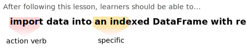
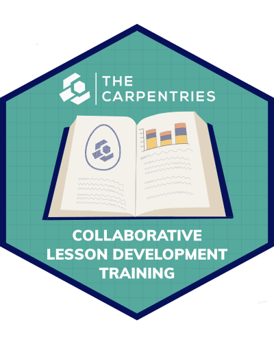

Image 1 of 1: ‘line chart showing growth in the number of lesson repositories in The Carpentries since 2015. Since 2019, the number of repositories in The Carpentires Incubator has grown to represent mare than half of the total 158 lesson repositories.’
The number of lessons under development in The Carpentries community has grown quickly in recent years.
Figure 3
Image 1 of 1: ‘Schematic of a life cycle for lessons that includes four stages: pre-alpha, where a lesson is being designed and drafted for the first time; alpha, where the lesson is tested in pilot workshops by its authors; beta, where the lesson is tested in pilot workshops by other instructors; and stable, where the lesson has been thoroughly tested and can be relied upon by other instructors to be ready to teach and unlikely to undergo significant changes without warning. Stable lessons can be peer reviewed in The Carpentries Lab and can join the Lab or one of The Carpentries official lesson programs.’
Image 1 of 1: ‘A schematic depicting an iterative process for lesson design. The process begins with identifying the target audience for the lesson. The remaining steps exist in a cycle, from defining desired outcomes, through designing examples and assessments to achieve these outcomes, then writing content to connect these examples together, and finally evaluating the lesson content by teaching it. After the lesson has been taught, the author can return to the define outcomes and reflect on how well they were achieved by the lesson in its current form.’
A modified version of Nicholl’s five phases of curriculum design.
Figure 2
Image 1 of 1: ‘An example leanring objective, "import data into an indexed DataFrame with read_csv", highlighting "import" as an action verb and "indexed" as making the objective more specific.’
An example learning objective.
Figure 3
Image 1 of 1: ‘a representation of Bloom's Taxonomy, presenting verbs at a series of categories as levels in a triangle/pyramid. The first category is titled "remember", followed by "understand", "apply", "analyze", "evaluate", and finally "create". Each category contains examples of verbs that would fit it.’
Although it should not be interpreted as a strict hierarchy, Bloom’s Taxonomy is a useful source of action verbs for use in learning objectives. Image licensed CC-BY, source: Vanderbilt University. Original: https://cft.vanderbilt.edu/guides-sub-pages/blooms-taxonomy/
Figure 4
Image 1 of 1: ‘a screenshot of the fill-in-the-blanks example exercise written above, included for display purposes.’
An example of a “fill-in-the-blanks” exercise.
Figure 5
Image 1 of 1: ‘a screenshot of the parsons problem example exercise written above, included for display purposes.’
An example of a parsons problem exercise.
Figure 6
Image 1 of 1: ‘a screenshot of the theme and variations example exercise written above, included for display purposes.’
An example of a theme and variations exercise.
Figure 7
Image 1 of 1: ‘a screenshot of the minimal fix example exercise written above, included for display purposes.’
An example of a minimal fix exercise.
Figure 8
Image 1 of 1: ‘[decorative]’
The Carpentries Collaborative Lesson Development Training
Figure 9
Image 1 of 1: ‘[decorative]’
The Carpentries Incubator is where the community collaborates on new lessons.


![Schematic of a life cycle for lessons that includes four stages: pre-alpha, where a lesson is being designed and drafted for the first time; alpha, where the lesson is tested in pilot workshops by its authors; beta, where the lesson is tested in pilot workshops by other instructors; and stable, where the lesson has been thoroughly tested and can be relied upon by other instructors to be ready to teach and unlikely to undergo significant changes without warning. Stable lessons can be peer reviewed in The Carpentries Lab and can join the Lab or one of The Carpentries official lesson programs.](fig/life-cycle.svg)
![A schematic depicting an iterative process for lesson design. The process begins with identifying the target audience for the lesson. The remaining steps exist in a cycle, from defining desired outcomes, through designing examples and assessments to achieve these outcomes, then writing content to connect these examples together, and finally evaluating the lesson content by teaching it. After the lesson has been taught, the author can return to the define outcomes and reflect on how well they were achieved by the lesson in its current form.](fig/lesson-design-process.png)